English
English
 简体中文
简体中文
東京の主要観光地へのアクセス
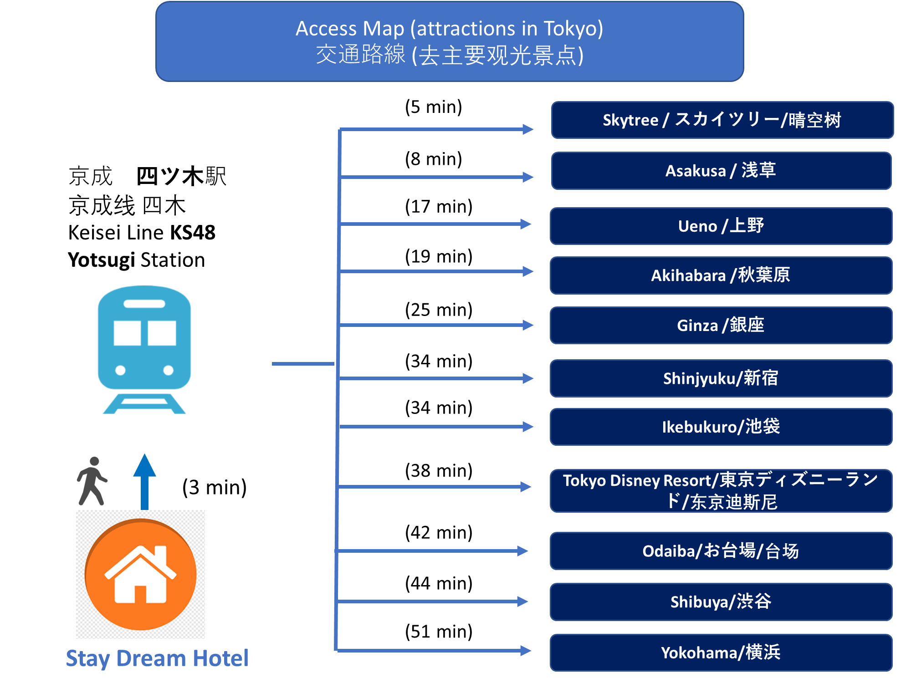交通の観点から、一日単位で訪ねるスポットのプランを作ってみました。ご参考ください。
Day 1: 上野、秋葉原
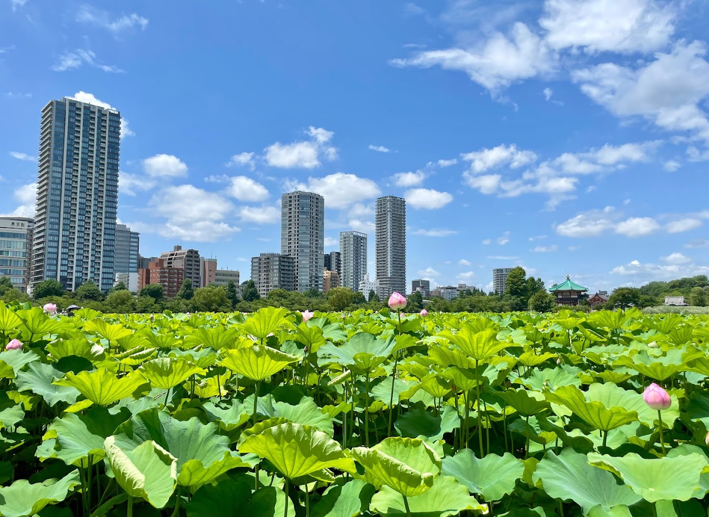
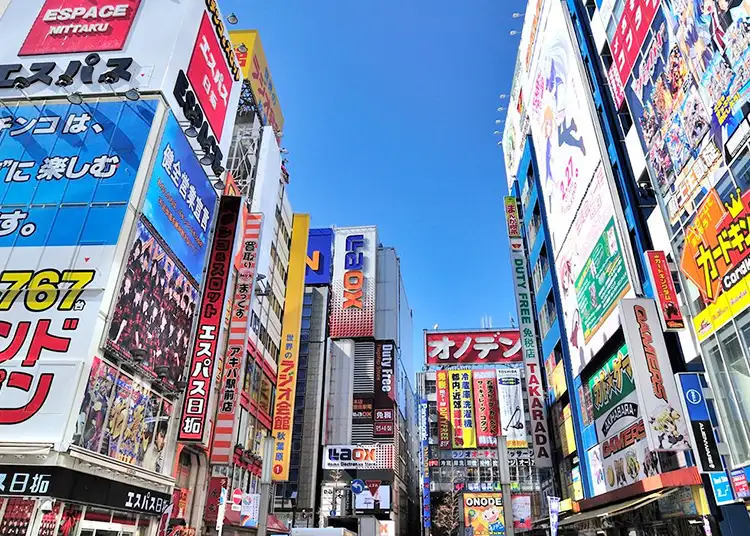
上野駅は以前東京の中心です。アクセスしやすく、交通便利です。観光地が多いだけではなく、ショッピングもしやすいです。有名な博物館、美術館、動物園があります。
秋葉原は世界的な電気の街！そして、ゲームやアニメ、ポップカルチャーの発信地であり中心地です！
Day 2: スカイツリー、浅草、お台場海浜公園
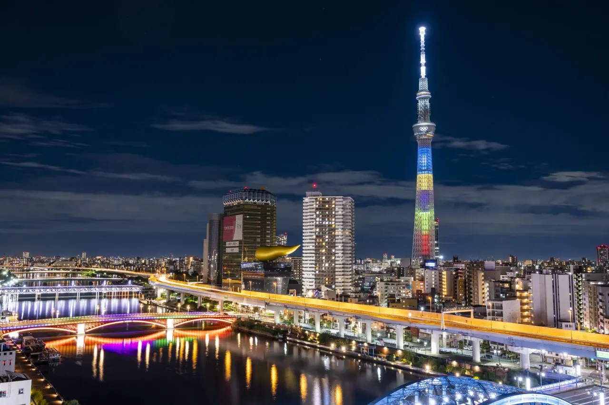
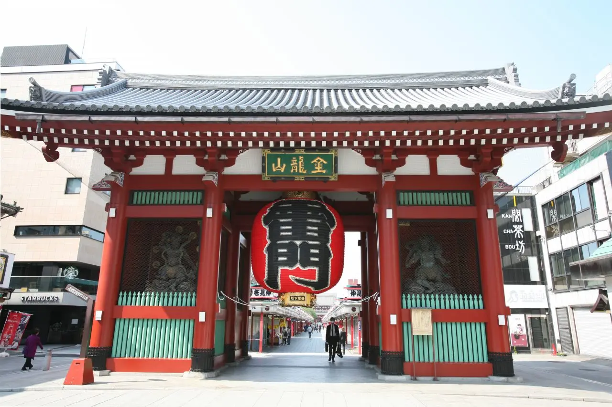
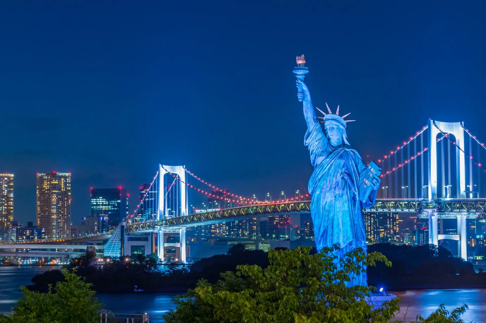
東京スカイツリーは世界一高いタワーとして「ギネス世界記録」に認定されている。
関東平野を一望できる。
日本では最も有名な観光地といえる「浅草」を観光しよう。 歴史ある神社仏閣、日本の食文化が感じられる和菓子やグルメなど、東京で最も日本らしさを感じられるエリア
浅草から船を乗って、お台場海浜公園に行ける。綺麗な夜景が見えるロマンチックなスポットもあり、カップルでデートするにもお勧め.
Day 3: 渋谷、原宿、明治神宮


渋谷スクランブルスクエアは世界一忙しい交差点です。
若者のファッション・カルチャーや流行の中心地です。
JR渋谷駅のハチ公口を出てすぐに鎮座する「ハチ公像」と一緒に写真を撮りましょう。
原宿駅周辺から表参道駅周辺まで広がる「原宿」エリア。 日本でも有数のショッピングエリアであり、多くの若者と最先端のブランドやアイテムが集まるトレンドの発信地だ。
Day 4: 池袋、新宿
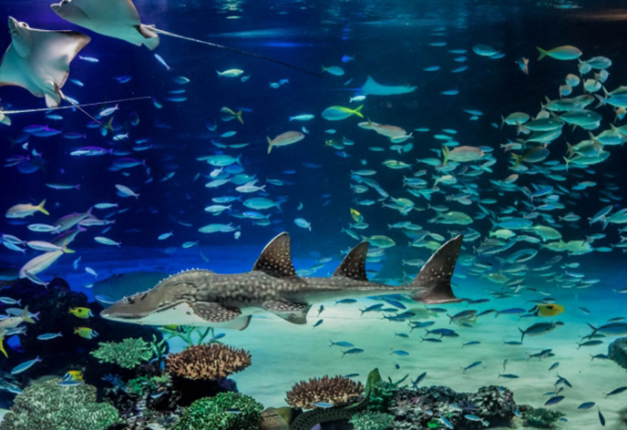
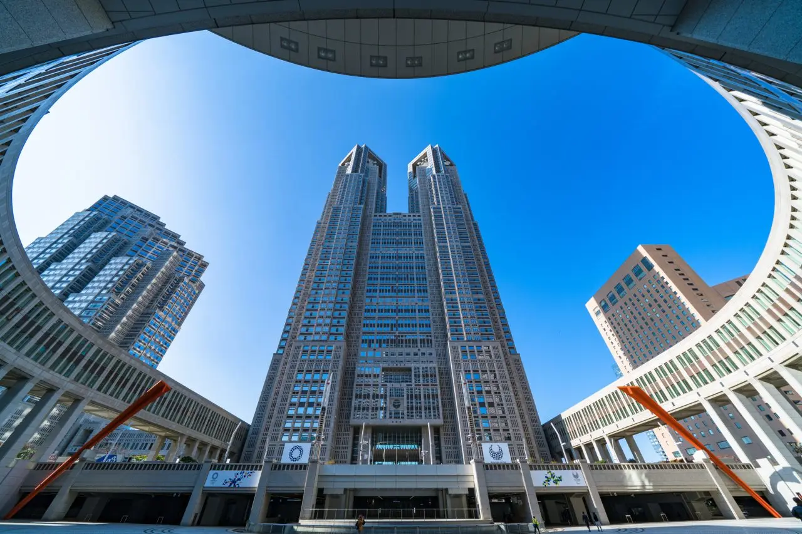
池袋駅には商業施設がたくさんあり、もっとも魅力的サンシャイン水族館があります。
『サンシャイン水族館』は、日本初の都市型高層水族館です。“天空のオアシス”をコンセプトに空・光・水・緑に満ちた空間で、都会の真ん中とは思えない気分を味わえます。
新宿は高層ビルが立ち並び、たくさんの商業施設や巨大な歓楽街のあるビッグタウン
Day 5: 東京駅、皇居
 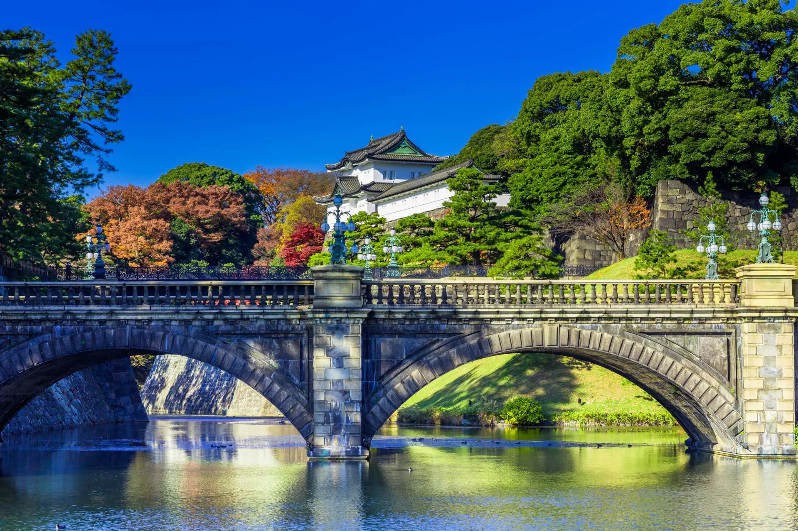
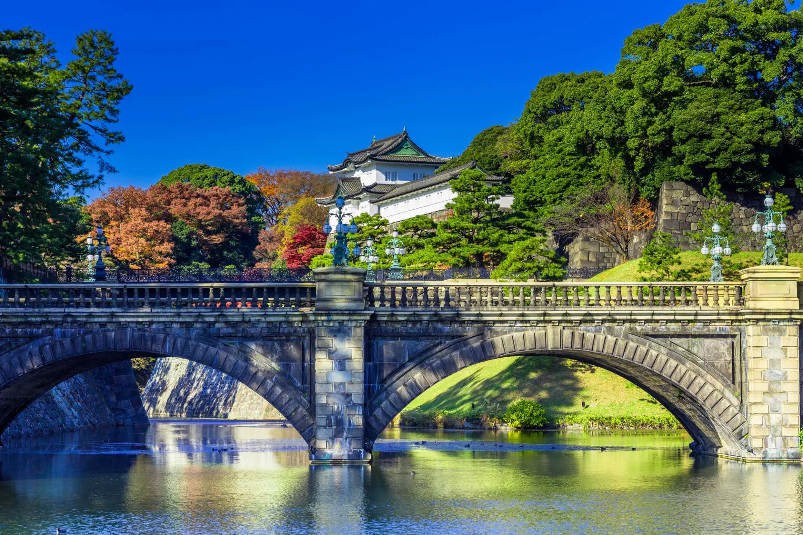
1914年12月に開業した日本の玄関口・東京駅は美しい建物です。駅一周は高層ビルと自然を融合した景色を楽しめます。
「天皇」の住居である「皇居」とその周辺スポットは、400年以上もの歴史ある建築物や、一年を通じて綺麗に手入れされた花々、自然の数々など、見どころが満載。
Day 6: 豊洲市場・東京タワー・銀座


東京の台所として都民の胃袋を支えてきた「築地市場」が老朽化に伴い2018年に豊洲へ移転。
豊洲市場内で一般来場者が入れるエリアは、6街区「水産仲卸売場棟」、7街区「施設管理・水産卸売場棟」、5街区「青果棟」です。
1958年に誕生した東京タワー。高さは333mと、当時は、自立式鉄塔として、パリのエッフェル塔を超える世界一の高さを誇った.
Day 7: 東京ディズニーランド・東京ディズニーシー
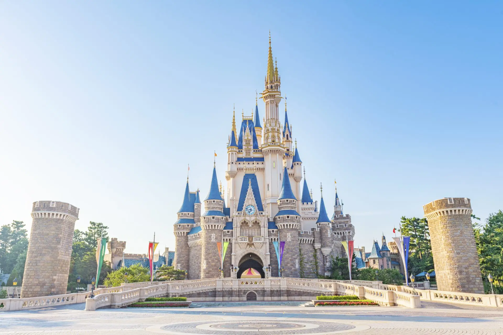
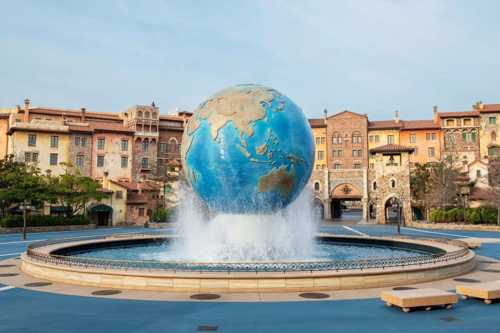
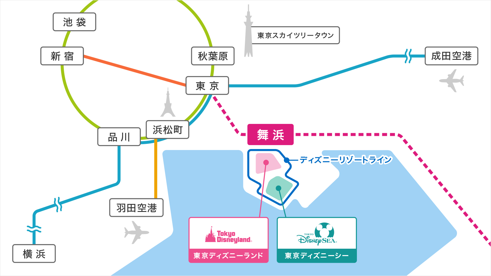
Day 8: 鎌倉
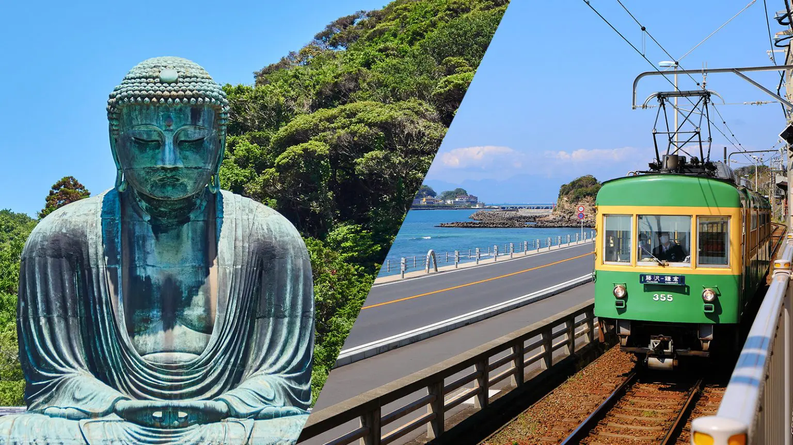

東京から1時間で行ける場所です。海と山に恵まれ、神社仏閣が多い「鎌倉」では、自然と神社・お寺が調和した四季折々の景観が楽しめる。
江ノ電・鎌倉高校前の踏切は1990年代にヒットした高校バスケットボールのアニメ『スラムダンク』のオープニングシーンに出てくる場所。
Special Event: 隅田川花火大会
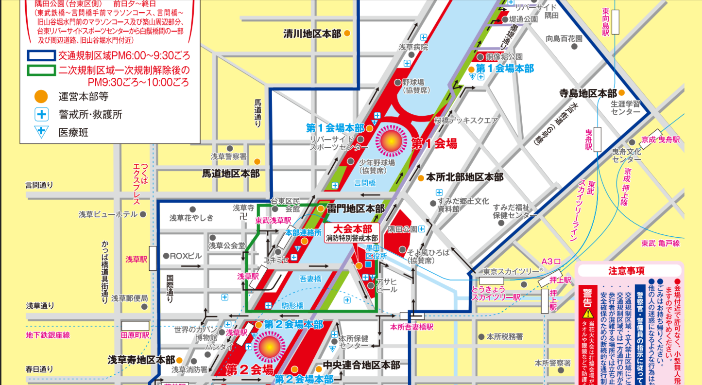
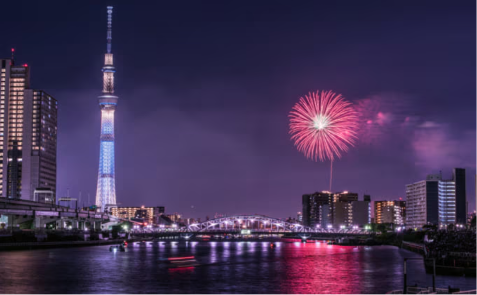
毎年7月最後の土曜日に開催する隅田川花火大会は、20,000発の花火の競演を楽しめる一大イベント。
日本国内最大規模の花火大会です。観客は１００万人規模です。